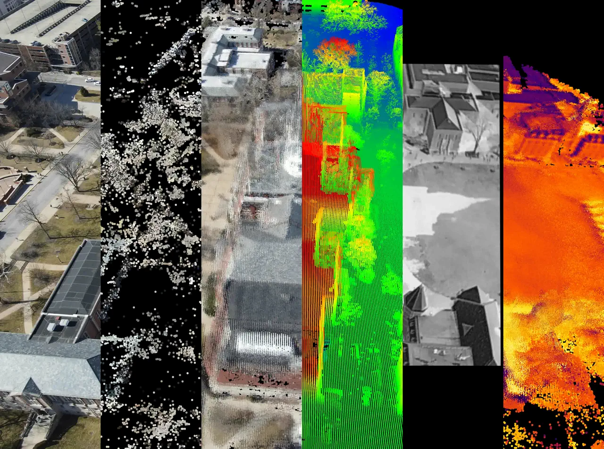
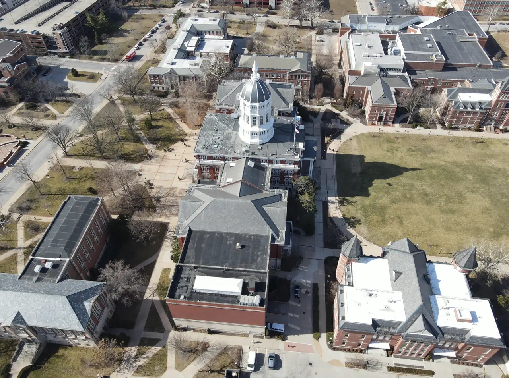
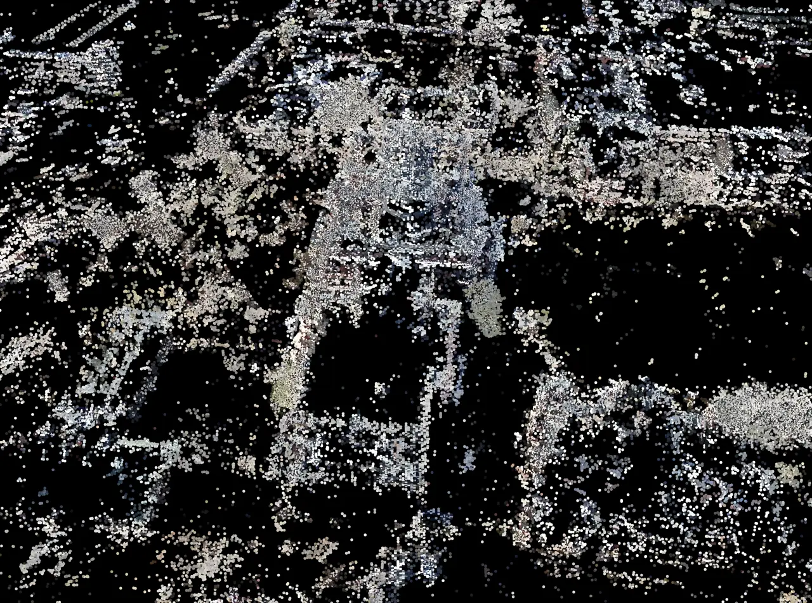
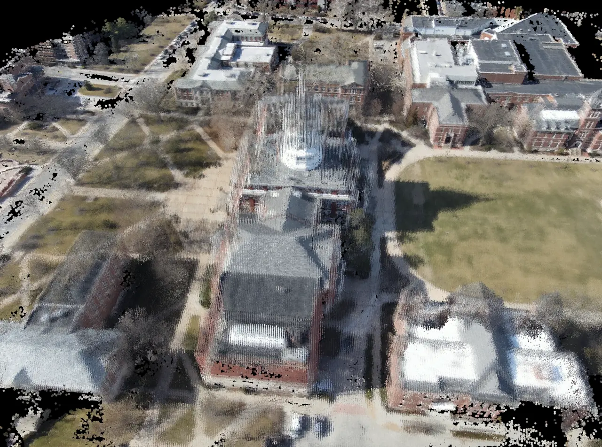
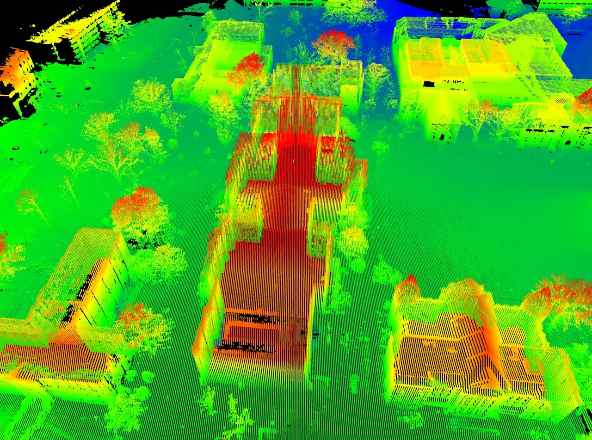
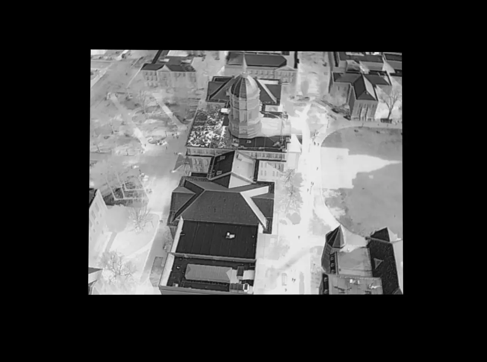
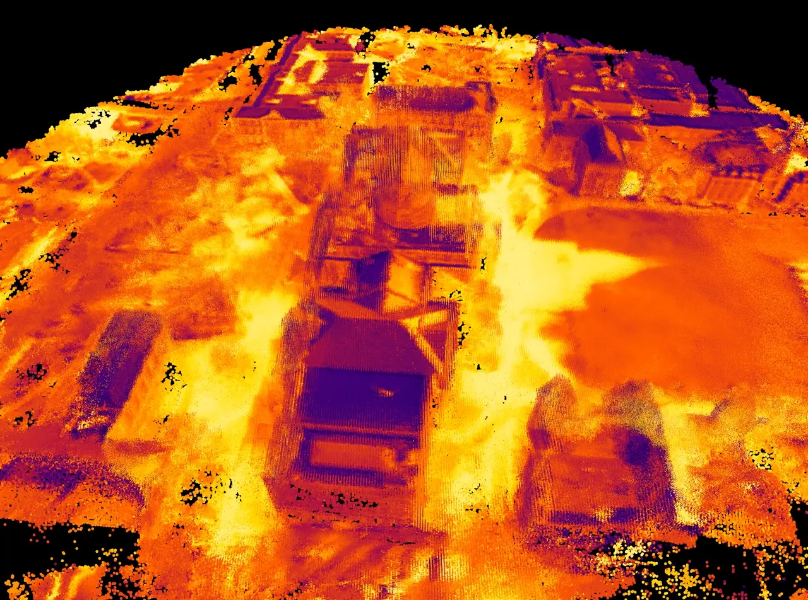

We introduce a series of 3D to 3D and 2D to 2D alignment methods for finely registring electro-optical (EO) imagery, thermal infrared (IR) imagery, and light detection and ranging (LIDAR) data.






